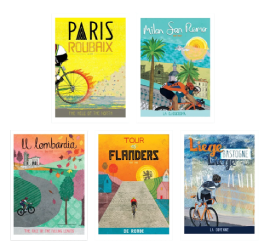
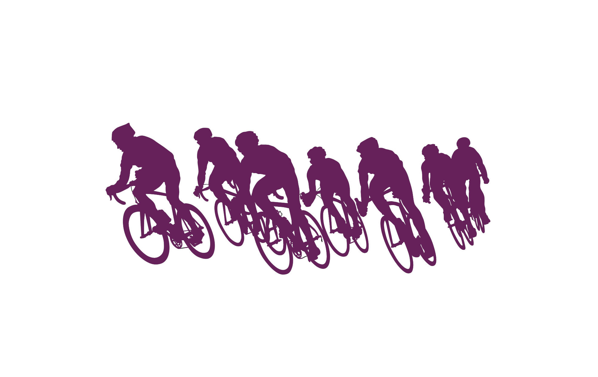
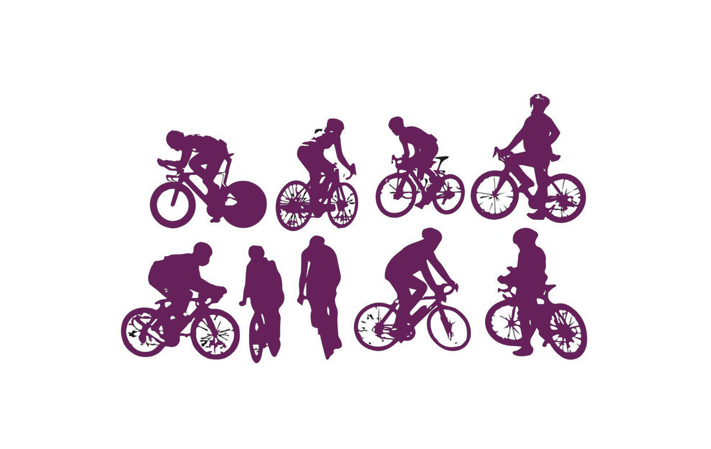
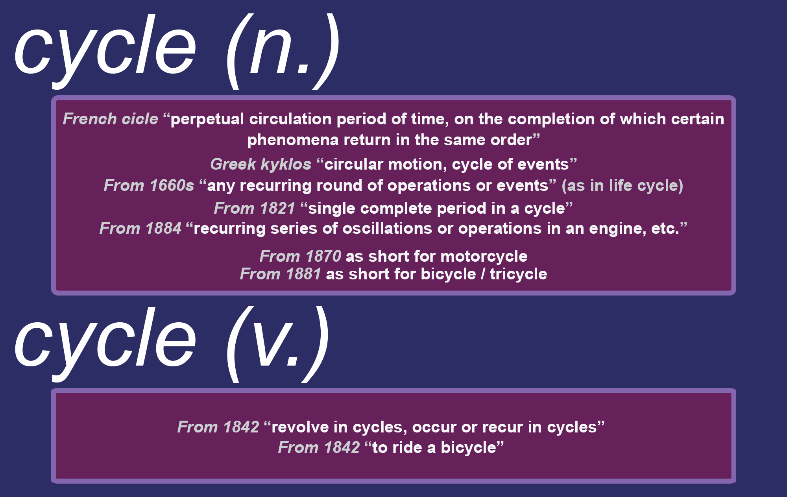
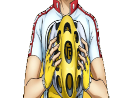
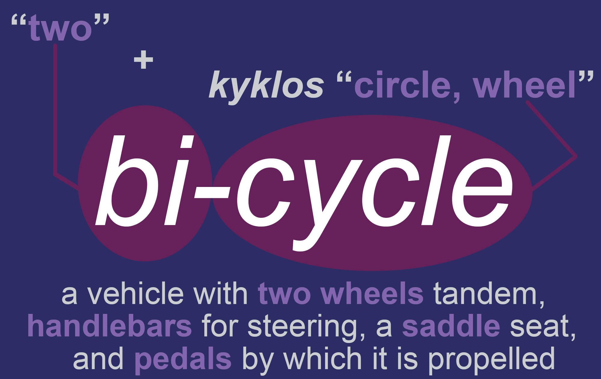

Cycling Journey
Two Wheels, One Soul
Freedom on every pedal stroke
NAVIGATION
Go back to "Career Portfolio"
About Us
Who Am I?
What Is My Objective?
PhilCycling (ICFP)
Union Cycliste Internationale
About Bicycles
Bicycle 101
Brands/Manufacturers
Overhaul
Parts
Types
Cycling 101
Clubs
Events
Glossary of Terms
History
Organizations
Rider Roles
Riding Techniques
Featured Blogs
Human Cyclist
The Cycling Blog
Gallery
Quotes
Records
Combike
Galaxy Watch 4
Relive
Xoss / Strava
Yowamushi Pedal
Hakone Academy Bicycle Racing Club
Hiroshima Kureminami Tech Bicycle Racing Club
Kumamoto Daiichi High Bicycle Racing Club
Kyoto Fushimi High Bicycle Racing Club
Sohoku High Bicycle Club
Explore. Dream. Discover

